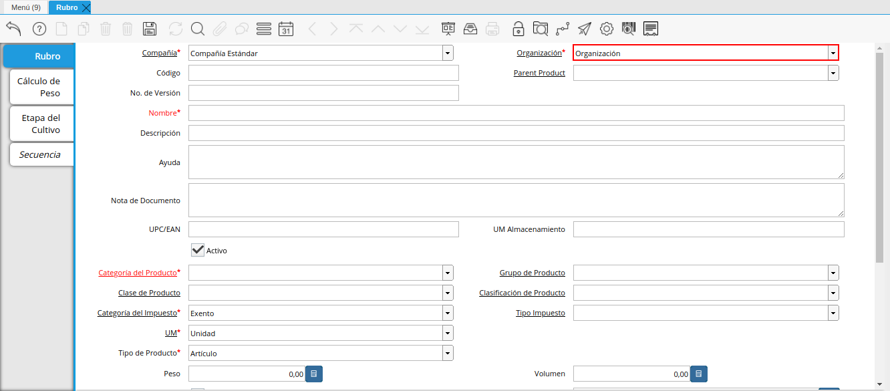
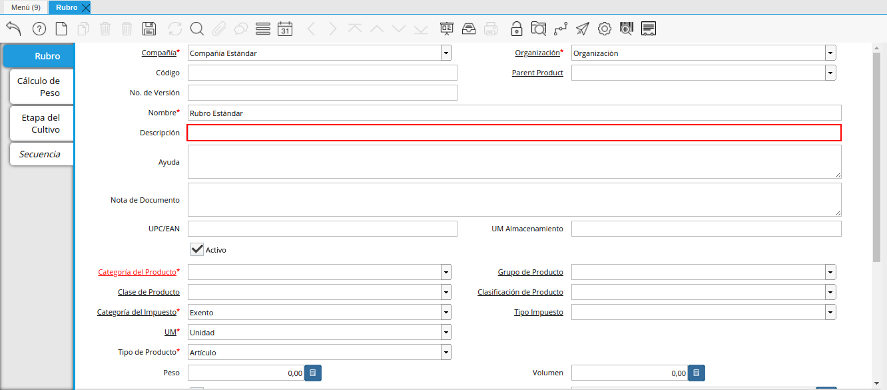
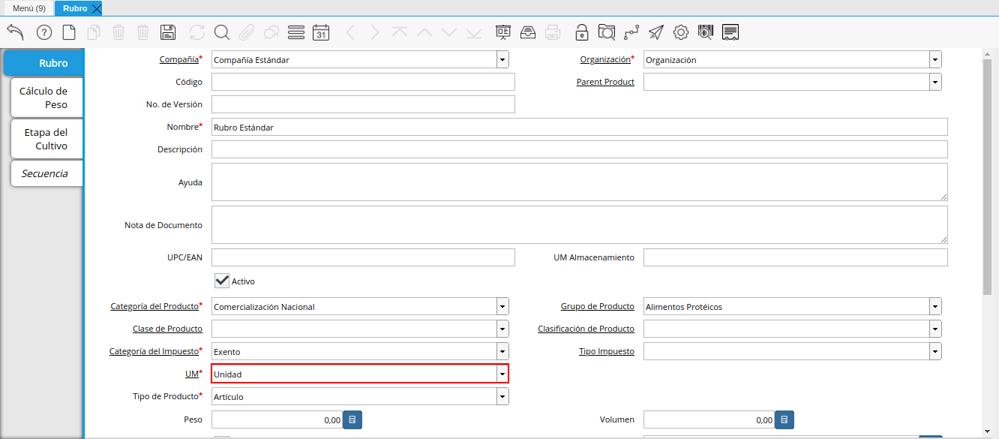
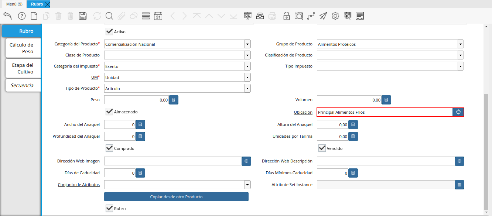

Registro de Rubro
Seleccione en el menú de ADempiere, la carpeta “Gestión de Asistencia Técnica Agricola”, luego selecione la carpeta “Configuración de Materia Prima”, por último seleccione la ventana “Rubro”.
Imagen 1. Menú de ADempiere

Podrá visualizar la ventana “Rubro”, con los diferentes rubros que contiene registrados ADempiere.
Imagen 2. Ventana Rubro

Seleccione el icono “Registro Nuevo”, ubicado en la barra de herramientas de ADempiere, para crear un nuevo registro de rubro.
Imagen 3. Icono Registro Nuevo de la Ventana Rubro
Seleccione en el campo “Organización”, la organización para la cual esta registrando el rubro.

Imagen 4. Campo Organización
Warning
Para que el rubro este disponible para todas las organizaciones, el mismo deberá estar registrado con la organización en (*) de lo contrario el rubro solo estará disponible para una sola organización.
Introduzca en el campo “Código”, el código para el rubro que esta registrando.
Imagen 5. Campo Código
Seleccione en el campo “Producto Padre”, el producto padre del rubro que se encuentra registrando.
Imagen 6. Campo Producto Padre
Introduzca en el campo “Nombre”, el nombre del rubro que esta registrando.
Imagen 7. Campo Nombre
Introduzca en el campo “Descripción”, una breve descripción correspondiente al rubro que esta registrando.

Imagen 8. Campo Descripción
Introduzca en el campo “Nota de Documento”, cualquier información adicional que considere necesaria.
Imagen 9. Campo Nota de Documento
Introduzca en el campo “UPC/EAN”, el código de barras correspondiente al rubro que esta registrando.
Imagen 10. Campo UPC/EAN
Introduzca en el campo “UM Almacenamiento”, la unidad de medida de almacenamiento del rubro.
Imagen 11. Campo UM Almacenamiento
Seleccione en el campo “Categoría del Producto”, la categoría a la cual pertenece el rubro que esta registrando, la selección de este define el comportamiento del rubro que se esta registrando, dicho comportamiento se encuentra explicado en el documento Categorías de Productos elaborado por ERPyA.
Imagen 12. Campo Categoría del Producto
Seleccione en el campo “Grupo de Producto”, el grupo al cual pertenece el rubro que esta registrando, la selección de este define el comportamiento del rubro que se esta registrando, dicho comportamiento se encuentra explicado en el documento Grupo de Productos elaborado por ERPyA.
Imagen 13. Campo Grupo de Producto
Seleccione en el campo “Clase de Producto”, la clase a la cual pertenece el rubro que esta registrando.
Imagen 14. Campo Clase de Producto
Seleccione en el campo “Clasificación de Producto”, la clasificación a la cual pertenece el rubro que esta registrando.
Imagen 15. Campo Clasificación de Producto
Seleccione en el campo “Categoría del Impuesto”, la agrupación de impuestos aplicale al rubro que esta registrando.
Imagen 16. Campo Categoría del Impuesto
Seleccione en el campo “Tipo de Impuesto”, el tipo de impuesto aplicable al rubro que esta registrando.
Imagen 17. Campo Tipo de Impuesto
Seleccione en el campo “UM”, la unidad de medida del rubro.

Imagen 18. Campo UM
Seleccione en el campo “Tipo de Producto”, el tipo de producto que esta registrando.
Imagen 19. Campo Tipo de Producto
Introduzca en el campo “Peso”, el peso del rubro que esta registrando.
Imagen 20. Campo Peso
Introduzca en el campo “Volumen”, el volumen del rubro que esta registrando.
Imagen 21. Campo Volumen
Podrá apreciar el checklist “Almacenado”, indicando que la empresa almacena el rubro que esta registrando.
Imagen 22. Checklist Almacenado
Seleccione en el campo “Ubicación”, la ubicación de almacenamiento dentro de la empresa del rubro que esta registrando.

Imagen 23. Campo Ubicación
Introduzca en el campo “Ancho de Anaquel”, el ancho requerido del anaquel para almacenar el rubro que esta registrando.
Imagen 24. Campo Ancho de Anaquel
Introduzca en el campo “Altura del Anaquel”, la altura requerida del anaquel para almacenar el rubro que esta registrando.
Imagen 25. Campo Altura del Anaquel
Introduzca en el campo “Profundidad del Anaquel”, la profundidad requerida del anaquel para almacenar el rubro que esta registrando.
Imagen 26. Campo Profundidad del Anaquel
Introduzca en el campo “Unidades por Tarima”, el número de unidades del rubro que esta registrando que caben en una tarima.
Imagen 27. Campo Unidades por Tarima
Podrá visualizar el checklist “Comprado”, indicando que la organización compra el rubro que se esta registrando.
Imagen 28. Checklist Comprado
Podrá visualizar el checklist “Vendido”, indicando que la organización compra el rubro que se esta registrando.
Imagen 29. Checklist Vendido
Introduzca en el campo “Dirección Web Imagen”, la url de la imagen del rubro.
Imagen 30. Campo Dirección Web Imagen
Introduzca en el campo “Dirección Web Descripción”, la url de la descripción del rubro.
Imagen 31. Campo Dirección Web Descripción
Introduzca en el campo “Días de Caducidad”, el número de días límite de disponibilidad o garantía del rubro que esta registrando.
Imagen 32. Campo Días de Caducidad
Introduzca en el campo “Días Mínimos Caducidad”, el número mínimo de días límite de disponibilidad o garantía del producto que esta registrando.
Imagen 33. Campo Días Mínimos Caducidad
Seleccione en el campo “Conjunto de Atributos”, el atributo del producto que esta registrando.
Imagen 34. Campo Conjunto de Atributos
Seleccione en el campo “Instancia Conjunto de Atributos”, el conjunto de atributos perteneciente al producto que esta registrando.
Imagen 35. Campo Instancia Conjunto de Atributo
Podrá visualizar el checklist “Rubro”, indicando que se esta registrando un rubro.
Imagen 36. Checklist Rubro


Seleccione el icono “Guardar Cambios” en la barra de herramientas de ADempiere.
Imagen 37. Icono Guardar Cambios
Cálculo de Peso
Seleccione la pestaña “Cálculo de Peso” y proceda al llenado de los campos.
Imagen 38. Pestaña Cálculo de Peso
Seleccione en el campo “Tipo de Cálculo de Peso”, el tipo de cálculo de peso correspondiente al registro que se encuentra realizando.
Imagen 39. Campo Tipo de Cálculo de Peso
Introduzca en el campo “Código”, el código correspondiente al registro que se encuentra realizando.
Imagen 40. Campo Código
Note
El código para el registro en el formato requerido; debe ser único. Un código le permite a usted un método rápido de encontrar un registro en particular.
Seleccione en el campo “Secuencia”, la secuencia correspondiente al registro que se encuentra realizando.
Imagen 41. Campo Secuencia
Introduzca en el campo “Nombre”, el nombre correspondiente al registro que se encuentra realizando.
Imagen 42. Campo Nombre
Introduzca en el campo “Nombre de Clase”, el nombre clase correspondiente al registro que se encuentra realizando.
Imagen 43. Campo Nombre de Clase
Note
El nombre de clase identifica el nombre de la clase Java usada por este proceso.
Introduzca en el campo “Descripción”, una breve descripción correspondiente al registro que se encuentra realizando.
Imagen 44. Campo Descripción
Seleccione en el campo “Tipo de Uso”, el tipo de uso para el cálculo de peso correspondiente al registro que se encuentra realizando.
Imagen 45. Campo Tipo de Uso
Seleccione el icono “Guardar Cambios” en la barra de herramientas de ADempiere.
Imagen 46. Icono Guardar Cambios
Etapa del Cultivo
Seleccione la pestaña “Etapa del Cultivo” y proceda al llenado de los campos correspondientes.
Imagen 47. Pestaña Etapa del Cultivo
Seleccione en el campo “Código”, el código correspondiente al registro que se encuentra realizando.
Imagen 48. Campo Código
Seleccione en el campo “Secuencia”, la secuencia correspondiente al registro que se encuentra realizando.
Imagen 49. Campo Secuencia
Introduzca en el campo “Nombre”, el nombre correspondiente al registro que se encuentra realizando.
Imagen 50. Campo Nombre
Introduzca en el campo “Día Desde”, el día de inicio del cultivo del rubro.
Imagen 51. Campo Día Desde
Introduzca en el campo “Día Hasta”, la día final del cultivo del rubro.
Imagen 52. Campo Día Hasta


Seleccione el icono “Guardar Cambios” en la barra de herramientas de ADempiere.
Imagen 53. Icono Guardar Cambios